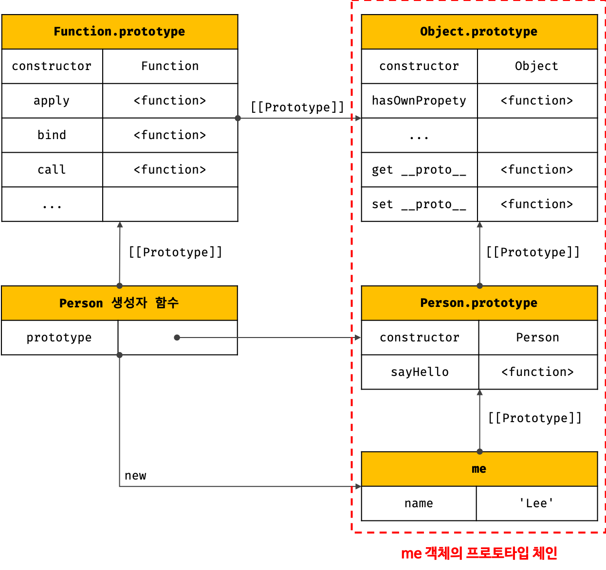

19. 프로토 타입 (2)
Table of Contents
- 7) 프로토타입 체인
- 8) 오버라이딩과 프로퍼티 섀도잉
- 9) 프로토타입의 교체
- 10) instanceof 연산자
- 11) 직접 상속
- 12) 정적 프로퍼티/메서드
- 13) 프로퍼티 존재 확인
- 14) 프로퍼티 열거
7) 프로토타입 체인
자바스크립트는 객체의 프로퍼티에 접근하려고 할 때 해당 객체에 접근하려는 프로퍼티가 없다면 [[Prototype]] 내부 슬롯의 참조를 따라 자신의 부모 역할을 하는 프로토타입의 프로퍼티, 그 프로토타입의 프로퍼티 등을 종단에 이를때까지 순차적으로 검색한다. 이를 프로토타입 체인이라 한다. 프로토타입 체인은 자바스크립트가 객체지향 프로그래밍의 상속을 구현하는 메커니즘이다.
1 | function Person(name) { |
- 위 코드를 그림으로 도식화하면 다음과 같다.
프로토타입 체인
- 프로토타입 체인의 최상위에 위치하는 객체는 언제나 Object.prototype이다. 따라서 모든 객체는 Object.prototype을 상속받는다. Object.prototype을 프로토타입 체인의 종점(end of prototype chain) 이라고 한다.
- 프로토타입 체인의 종점인 Object.prototype에서도 프로퍼티를 검색할 수 없는 경우, undefined를 반환한다.
- Object.prototype의 프로토타입, 즉 [[Prototype]] 내부 슬롯의 값은 null이다.
- 프로토타입 체인과 스코프 체인은 서로 연관없이 별도로 동작하는 것이 아니라 서로 협력하여 식별자와 프로퍼티를 검색하는 데 사용된다.
- 프로토타입 체인 : 상속과 프로퍼티 검색을 위한 메커니즘
자바스크립트 엔진은 객체 간의 상속 관계로 이루어진 프로토타입의 계층적인 구조에서 객체의 프로퍼티를 검색한다. - 스코프 체인 : 식별자 검색을 위한 메커니즘
자바스크립트 엔진은 함수의 중첩 관계로 이루어진 스코프의 계층적 구조에서 식별자를 검색한다.
- 프로토타입 체인 : 상속과 프로퍼티 검색을 위한 메커니즘
1 | me.hasOwnProperty('name'); |
위 예제의 경우, 먼저 스코프 체인에서 me 식별자를 검색한다. me 식별자는 전역에서 선언되었으므로 전역 스코프에서 검색된다. me 식별자를 검색한 다음, me 객체의 프로토타입 체인에서 hasOwnProperty 메서드를 검색한다.
8) 오버라이딩과 프로퍼티 섀도잉
9) 프로토타입의 교체
9.1. 생성자 함수에 의한 프로토타입의 교체
9.2. 인스턴스에 의한 프로토타입의 교체
10) instanceof 연산자
11) 직접 상속
11.1 Object.create에 의한 직접 상속
11.2 객체 리터럴 내부에서 __proto__에 의한 직접 상속
12) 정적 프로퍼티/메서드
13) 프로퍼티 존재 확인
13.1. in 연산자
13.2. Object.prototype.hasOwnProperty 메서드
14) 프로퍼티 열거
14.1 for…in 문
14.2. Object.keys/values/entries 메서드
Reference
- poiemaweb.com